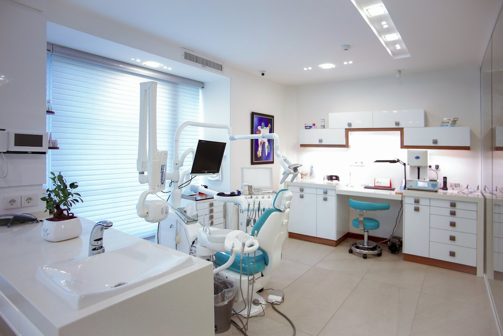

01 / SPÉCIALITÉ
Cardiologie
Le cardiologue est le médecin spécialisé dans l'étude du cœur et des vaisseaux. Il suit certains patients au long cours.
Choisir ce servicePROPOSITION POUR CONAKRY
International Clinic Conakry est un établissement de soins privé situé à Camayenne, commune de Dixinn. Cette proposition de site réorganise l'information pour que chaque visiteur trouve rapidement ce qu'il cherche.
Urgences : 24 h/24 et 7 j/7+224 627 49 33 27 — numéro relevé sur le site source, à confirmerPhoto d'illustration sous licence Unsplash — à remplacer par une photographie authentique de la clinique.
SPÉCIALITÉS MÉDICALES & CHIRURGICALES
Ces intitulés sont relevés sur la page publique de référence. Leur disponibilité actuelle, les praticiens et les horaires doivent être confirmés par la clinique avant publication.
11 spécialités affichées
01 / SPÉCIALITÉ
Le cardiologue est le médecin spécialisé dans l'étude du cœur et des vaisseaux. Il suit certains patients au long cours.
Choisir ce service02 / SPÉCIALITÉ
La gynécologie traite de la physiologie du système génital féminin et de l'ensemble des affections qui le concernent.
Choisir ce service03 / SPÉCIALITÉ
L'endocrinologue est le spécialiste des problèmes hormonaux. Il prend en charge les pathologies liées à un dérèglement du système endocrinien.
Choisir ce service04 / SPÉCIALITÉ
Spécialité consacrée à l'appareil digestif et à ses pathologies. Description à faire valider par la clinique.
Choisir ce service05 / SPÉCIALITÉ
La neurologie traite des maladies du système nerveux, central et périphérique. Description à faire valider par la clinique.
Choisir ce service06 / SPÉCIALITÉ
Spécialité de la vision et de l'œil : examen, suivi et prise en charge des affections oculaires. Description à faire valider.
Choisir ce service07 / SPÉCIALITÉ
Spécialité des lésions de l'appareil locomoteur d'origine traumatique. Description à faire valider par la clinique.
Choisir ce service08 / SPÉCIALITÉ
L'urologie traite des voies urinaires et de l'appareil génital masculin. Description à faire valider par la clinique.
Choisir ce service09 / SPÉCIALITÉ
Intitulé présent sur la page source. Intitulé, périmètre et disponibilité à confirmer par la clinique.
Choisir ce service10 / SPÉCIALITÉ
Intitulé présent sur la page source. Intitulé, périmètre et disponibilité à confirmer par la clinique.
Choisir ce service11 / SPÉCIALITÉ
Intitulé présent sur la page source. Intitulé, périmètre et disponibilité à confirmer par la clinique.
Choisir ce serviceCette liste est illustrative. Elle ne confirme pas la disponibilité actuelle d'une consultation ou d'un praticien.
DÉCOUVRIR LA CLINIQUE
La conception du bâtiment se veut intelligente et ergonomique : elle favorise les échanges et le travail interdisciplinaire, et optimise la gestion des flux fonctionnels entre patients, visiteurs et personnel.
Inaugurée en août 2019, l'établissement accueille ses patients dans un environnement conçu autour du patient, avec des soins spécialisés et personnalisés.
Textes reformulés à partir de la page publique de référence ; validation éditoriale requise.

Illustration sous licence Unsplash — ne présente pas l'intérieur réel de la clinique.
Six vues d'illustration donnant une idée de l'ambiance visée. Les photographies authentiques de la clinique devront les remplacer.
NORMES & STANDARDS
La clinique indique s'engager dans une démarche de certification ISO 9001 version 2015. La certification n'est pas présentée comme acquise : c'est un objectif, pas un fait avéré.
La page source annonce un engagement dans une démarche qualité en vue d'une certification ISO 9001 :2015. Aucun certificat n'est présenté à ce stade : le statut exact devra être confirmé et documenté avant toute mention sur un site officiel.
Liste reprise de la page « Normes & Standards » du site source. L'existence réelle de chaque dispositif doit être vérifiée auprès de la clinique.
La source indique que des conventions ont été conclues avec des organismes publics et des institutions privées afin de permettre une prise en charge optimale des frais de soins.
La liste des organismes conventionnés et leurs conditions doivent être confirmées avant publication.
PARCOURS PATIENT
Une expérience bien conçue répond aux premières questions avant même le premier contact : où aller, quoi apporter, qui joindre.
Voir la simulationParcourir les spécialités et retrouver les éléments essentiels dans une structure lisible.
Identifier le bon canal de contact et les modalités qui auront été confirmées par la clinique.
Une fois le contenu validé, accéder à un contact officiel ou à un véritable parcours de réservation.
Parcours proposé à titre de démonstration ; il ne décrit pas le processus actuel de la clinique.
QUESTIONS FRÉQUENTES
Les réponses ci-dessous décrivent uniquement ce qui est documenté ou ce que ce prototype permet. Rien n'est promis au nom de la clinique.
Non. Il s'agit d'une proposition indépendante de refonte, présentée comme prototype. Elle n'est ni publiée par l'établissement ni validée par lui. La mention « Prototype indépendant — non officiel » reste visible sur toute la page.
La source publique situe l'établissement à Camayenne, commune de Dixinn, Conakry. L'adresse complète et le point cartographique exact doivent être confirmés avant publication.
La page source indique que l'accueil des urgences opère 24 h/24 et 7 j/7. Ce doit être vérifié directement auprès de la clinique avant d'en faire une information officielle. En cas d'urgence vitale, contactez en priorité les services d'urgence locaux.
La modalité officielle de rendez-vous (téléphone, accueil, canal numérique) n'est pas confirmée. Le formulaire de cette page est une simulation locale : il ne réserve rien et n'envoie rien.
Non. Aucune donnée n'est transmise, enregistrée, ni conservée : ni serveur, ni cookie, ni stockage navigateur. La validation s'effectue entièrement dans votre navigateur et le message final le rappelle explicitement.
La source présente une démarche engagée en vue d'une certification ISO 9001 version 2015. Aucun certificat n'est affiché. Le statut exact doit être confirmé : une certification en cours de démarche n'est pas une certification obtenue.
SIMULATION LOCALE
Cette maquette montre comment un premier parcours de rendez-vous pourrait se présenter : service, date, période. Elle ne réserve aucun créneau et ne contacte pas la clinique.
PRÉPARER SA VISITE
Les coordonnées et horaires sont des informations critiques. Cette maquette affiche les valeurs relevées sur la source publique et signale clairement celles qui restent à confirmer.
Camayenne, commune de Dixinn, Conakry, Guinée — indication publique à confirmer.Adresse exacte à valider
+224 627 49 33 27, affiché sur le site source. Numéro à confirmer directement auprès de la clinique avant toute utilisation officielle.Numéro à confirmer
contact@internationalclinic.ma, affiché sur la source mais appartenant au domaine du groupe à Casablanca : email local à confirmer.Email local à confirmer
Urgences annoncées 24 h/24 et 7 j/7 sur la source. Les horaires de l'accueil et de chaque service doivent être confirmés séparément.Horaires à confirmer
Si vous faites face à une urgence médicale, contactez les services d'urgence locaux par un canal officiel. Ce prototype n'est pas un service d'urgence, ne surveille pas les demandes et ne remplace aucun avis médical.
PROCHAINE ÉTAPE
La validation des contenus, des coordonnées et du parcours par l'équipe de la clinique reste le préalable à toute version officielle.
Revenir en haut